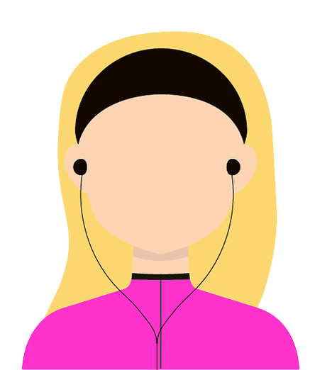

A uma metodologia utiliza em cinco etapas, que são divididos exatamente em cinco dias, para conceber uma ideia em algo tangível e testável.
Antes de partir para as cinco etapas, é preciso definir o problema ou desafio a ser resolvido. Também é preciso selecionar uma equipe de profissionais, de preferência multidisciplinar.
| Designer | Product Manager | Stakeholder | Desenvolvedor |
|  |
E o responsável para ir guiando a empreitada para que não se perca o foco e comandar as sessões coletivas.
| Entender | Etapa de mapear e entender o problema. Pesquisar, entender, levantar hipóteses e elaborar ideias. |
| Desenhar | Esboçar as ideias mapeadas no passo anterior. Você revisa as ideias existentes, mesclando e refinando-as. |
| Decidir | Confronta as hipóteses e rabisco e escolhe a melhor rota para solução do problema ou desafio. Filtrar o que será utilizado e descartar o que não será. |
| Prototipar | Construir um protótipo. |
| Testar | Testar o protótipo com pessoas e aprender com os resultados e feedbacks obtidos. Ao final, você reúne todas as informações colhidas nessa parte e decidi sobre a continuidade e aplicação real daquela ideia. |